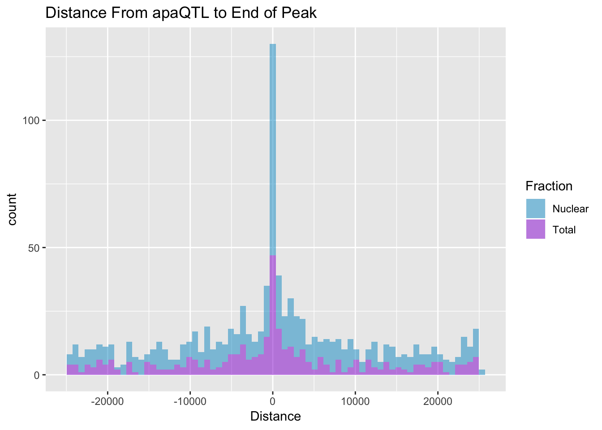
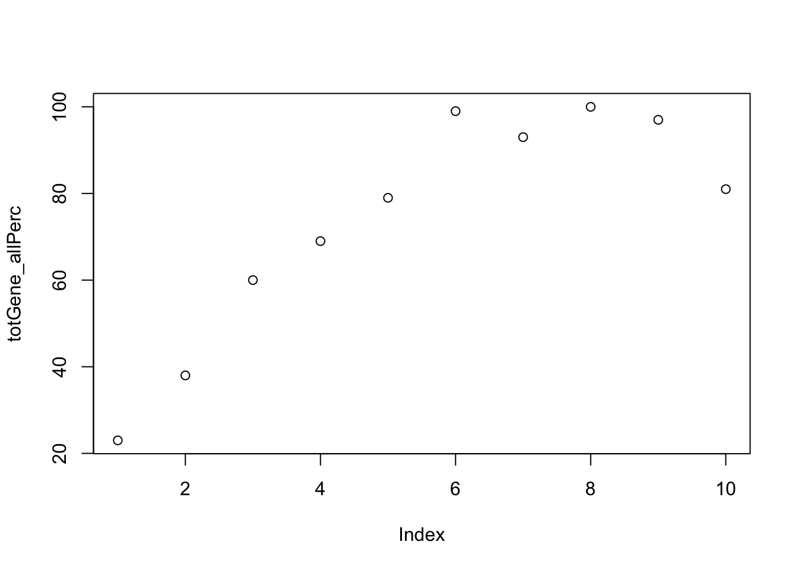

Last updated: 2019-02-15
Checks: 6 0
Knit directory: threeprimeseq/analysis/
This reproducible R Markdown analysis was created with workflowr (version 1.2.0). The Report tab describes the reproducibility checks that were applied when the results were created. The Past versions tab lists the development history.
Great! Since the R Markdown file has been committed to the Git repository, you know the exact version of the code that produced these results.
Great job! The global environment was empty. Objects defined in the global environment can affect the analysis in your R Markdown file in unknown ways. For reproduciblity it’s best to always run the code in an empty environment.
The command set.seed(12345) was run prior to running the code in the R Markdown file. Setting a seed ensures that any results that rely on randomness, e.g. subsampling or permutations, are reproducible.
Great job! Recording the operating system, R version, and package versions is critical for reproducibility.
Nice! There were no cached chunks for this analysis, so you can be confident that you successfully produced the results during this run.
Great! You are using Git for version control. Tracking code development and connecting the code version to the results is critical for reproducibility. The version displayed above was the version of the Git repository at the time these results were generated.
Note that you need to be careful to ensure that all relevant files for the analysis have been committed to Git prior to generating the results (you can use wflow_publish or wflow_git_commit). workflowr only checks the R Markdown file, but you know if there are other scripts or data files that it depends on. Below is the status of the Git repository when the results were generated:
Ignored files:
Ignored: .DS_Store
Ignored: .Rhistory
Ignored: .Rproj.user/
Ignored: data/.DS_Store
Ignored: data/perm_QTL_trans_noMP_5percov/
Ignored: output/.DS_Store
Untracked files:
Untracked: KalistoAbundance18486.txt
Untracked: analysis/4suDataIGV.Rmd
Untracked: analysis/DirectionapaQTL.Rmd
Untracked: analysis/EvaleQTLs.Rmd
Untracked: analysis/YL_QTL_test.Rmd
Untracked: analysis/ncbiRefSeq_sm.sort.mRNA.bed
Untracked: analysis/snake.config.notes.Rmd
Untracked: analysis/verifyBAM.Rmd
Untracked: analysis/verifybam_dubs.Rmd
Untracked: code/PeaksToCoverPerReads.py
Untracked: code/strober_pc_pve_heatmap_func.R
Untracked: data/18486.genecov.txt
Untracked: data/APApeaksYL.total.inbrain.bed
Untracked: data/ApaQTLs/
Untracked: data/ChromHmmOverlap/
Untracked: data/DistTXN2Peak_genelocAnno/
Untracked: data/GM12878.chromHMM.bed
Untracked: data/GM12878.chromHMM.txt
Untracked: data/LianoglouLCL/
Untracked: data/LocusZoom/
Untracked: data/NuclearApaQTLs.txt
Untracked: data/PeakCounts/
Untracked: data/PeakCounts_noMP_5perc/
Untracked: data/PeakCounts_noMP_genelocanno/
Untracked: data/PeakUsage/
Untracked: data/PeakUsage_noMP/
Untracked: data/PeakUsage_noMP_GeneLocAnno/
Untracked: data/PeaksUsed/
Untracked: data/PeaksUsed_noMP_5percCov/
Untracked: data/RNAkalisto/
Untracked: data/RefSeq_annotations/
Untracked: data/TotalApaQTLs.txt
Untracked: data/Totalpeaks_filtered_clean.bed
Untracked: data/UnderstandPeaksQC/
Untracked: data/WASP_STAT/
Untracked: data/YL-SP-18486-T-combined-genecov.txt
Untracked: data/YL-SP-18486-T_S9_R1_001-genecov.txt
Untracked: data/YL_QTL_test/
Untracked: data/apaExamp/
Untracked: data/apaQTL_examp_noMP/
Untracked: data/bedgraph_peaks/
Untracked: data/bin200.5.T.nuccov.bed
Untracked: data/bin200.Anuccov.bed
Untracked: data/bin200.nuccov.bed
Untracked: data/clean_peaks/
Untracked: data/comb_map_stats.csv
Untracked: data/comb_map_stats.xlsx
Untracked: data/comb_map_stats_39ind.csv
Untracked: data/combined_reads_mapped_three_prime_seq.csv
Untracked: data/diff_iso_GeneLocAnno/
Untracked: data/diff_iso_proc/
Untracked: data/diff_iso_trans/
Untracked: data/ensemble_to_genename.txt
Untracked: data/example_gene_peakQuant/
Untracked: data/explainProtVar/
Untracked: data/filtPeakOppstrand_cov_noMP_GeneLocAnno_5perc/
Untracked: data/filtered_APApeaks_merged_allchrom_refseqTrans.closest2End.bed
Untracked: data/filtered_APApeaks_merged_allchrom_refseqTrans.closest2End.noties.bed
Untracked: data/first50lines_closest.txt
Untracked: data/gencov.test.csv
Untracked: data/gencov.test.txt
Untracked: data/gencov_zero.test.csv
Untracked: data/gencov_zero.test.txt
Untracked: data/gene_cov/
Untracked: data/joined
Untracked: data/leafcutter/
Untracked: data/merged_combined_YL-SP-threeprimeseq.bg
Untracked: data/molPheno_noMP/
Untracked: data/mol_overlap/
Untracked: data/mol_pheno/
Untracked: data/nom_QTL/
Untracked: data/nom_QTL_opp/
Untracked: data/nom_QTL_trans/
Untracked: data/nuc6up/
Untracked: data/nuc_10up/
Untracked: data/other_qtls/
Untracked: data/pQTL_otherphen/
Untracked: data/peakPerRefSeqGene/
Untracked: data/perm_QTL/
Untracked: data/perm_QTL_GeneLocAnno_noMP_5percov/
Untracked: data/perm_QTL_GeneLocAnno_noMP_5percov_3UTR/
Untracked: data/perm_QTL_opp/
Untracked: data/perm_QTL_trans/
Untracked: data/perm_QTL_trans_filt/
Untracked: data/protAndAPAAndExplmRes.Rda
Untracked: data/protAndAPAlmRes.Rda
Untracked: data/protAndExpressionlmRes.Rda
Untracked: data/reads_mapped_three_prime_seq.csv
Untracked: data/smash.cov.results.bed
Untracked: data/smash.cov.results.csv
Untracked: data/smash.cov.results.txt
Untracked: data/smash_testregion/
Untracked: data/ssFC200.cov.bed
Untracked: data/temp.file1
Untracked: data/temp.file2
Untracked: data/temp.gencov.test.txt
Untracked: data/temp.gencov_zero.test.txt
Untracked: data/threePrimeSeqMetaData.csv
Untracked: data/threePrimeSeqMetaData55Ind.txt
Untracked: data/threePrimeSeqMetaData55Ind.xlsx
Untracked: data/threePrimeSeqMetaData55Ind_noDup.txt
Untracked: data/threePrimeSeqMetaData55Ind_noDup.xlsx
Untracked: data/threePrimeSeqMetaData55Ind_noDup_WASPMAP.txt
Untracked: data/threePrimeSeqMetaData55Ind_noDup_WASPMAP.xlsx
Untracked: output/picard/
Untracked: output/plots/
Untracked: output/qual.fig2.pdf
Unstaged changes:
Modified: analysis/28ind.peak.explore.Rmd
Modified: analysis/CompareLianoglouData.Rmd
Modified: analysis/NewPeakPostMP.Rmd
Modified: analysis/accountMapBias.Rmd
Modified: analysis/apaQTLoverlapGWAS.Rmd
Modified: analysis/cleanupdtseq.internalpriming.Rmd
Modified: analysis/coloc_apaQTLs_protQTLs.Rmd
Modified: analysis/dif.iso.usage.leafcutter.Rmd
Modified: analysis/diff_iso_pipeline.Rmd
Modified: analysis/explainpQTLs.Rmd
Modified: analysis/explore.filters.Rmd
Modified: analysis/flash2mash.Rmd
Modified: analysis/mispriming_approach.Rmd
Modified: analysis/overlapMolQTL.Rmd
Modified: analysis/overlapMolQTL.opposite.Rmd
Modified: analysis/overlap_qtls.Rmd
Modified: analysis/peakOverlap_oppstrand.Rmd
Modified: analysis/peakQCPPlots.Rmd
Modified: analysis/pheno.leaf.comb.Rmd
Modified: analysis/pipeline_55Ind.Rmd
Modified: analysis/swarmPlots_QTLs.Rmd
Modified: analysis/test.max2.Rmd
Modified: analysis/test.smash.Rmd
Modified: analysis/understandPeaks.Rmd
Modified: code/Snakefile
Note that any generated files, e.g. HTML, png, CSS, etc., are not included in this status report because it is ok for generated content to have uncommitted changes.
These are the previous versions of the R Markdown and HTML files. If you’ve configured a remote Git repository (see ?wflow_git_remote), click on the hyperlinks in the table below to view them.
| File | Version | Author | Date | Message |
|---|---|---|---|---|
| html | b08b424 | Briana Mittleman | 2019-02-14 | Build site. |
| Rmd | d09198c | Briana Mittleman | 2019-02-14 | expression and gene anno |
| html | 450b389 | Briana Mittleman | 2019-02-06 | Build site. |
| Rmd | 6bac9f9 | Briana Mittleman | 2019-02-06 | add distance plots for QC on APAqtls |
I will use this to look at some metrics around the the QTLs from the pipeline for all 55 individuals. In this analysis I found 363 qtls in the total fraction and 623 in the nuclear.
library(workflowr)This is workflowr version 1.2.0
Run ?workflowr for help getting startedlibrary(tidyverse)── Attaching packages ───────────────────────────────────────────────────────────── tidyverse 1.2.1 ──✔ ggplot2 3.0.0 ✔ purrr 0.2.5
✔ tibble 1.4.2 ✔ dplyr 0.7.6
✔ tidyr 0.8.1 ✔ stringr 1.4.0
✔ readr 1.1.1 ✔ forcats 0.3.0Warning: package 'stringr' was built under R version 3.5.2── Conflicts ──────────────────────────────────────────────────────────────── tidyverse_conflicts() ──
✖ dplyr::filter() masks stats::filter()
✖ dplyr::lag() masks stats::lag()totQTLs=read.table("../data/perm_QTL_GeneLocAnno_noMP_5percov/filtered_APApeaks_merged_allchrom_refseqGenes.GeneLocAnno.NoMP_sm_quant.Total.fixed.pheno_5perc_permResBH.txt", stringsAsFactors = F, header=T)%>% filter(-log10(bh)>=1)
write.table(totQTLs,"../data/ApaQTLs/TotalapaQTLs.GeneLocAnno.noMP.5perc.10FDR.txt", row.names = F, col.names = F, quote = F)
nucQTLs=read.table("../data/perm_QTL_GeneLocAnno_noMP_5percov/filtered_APApeaks_merged_allchrom_refseqGenes.GeneLocAnno.NoMP_sm_quant.Nuclear.fixed.pheno_5perc_permResBH.txt", stringsAsFactors = F, header=T)%>% filter(-log10(bh)>=1)
write.table(nucQTLs,"../data/ApaQTLs/NuclearapaQTLs.GeneLocAnno.noMP.5perc.10FDR.txt", row.names = F, col.names = F, quote = F)I want to look at the distance between the QTL snp and the end of a peak. For a positive strand gene this is the end of the peak, for a - strand gene this is the start position of the peak. The peak strand here is opposite of the strand the gene is on.
I will make a python script that will take make the distance file for both the total and nucelar.
I copied these files to /project2/gilad/briana/threeprimeseq/data/ApaQTLs. I will put the QC files here as well.
getDistPeakEnd2QTL.py
#usage getDistPeakEnd2QTL.py "Total" or getDistPeakEnd2QTL.py "Nuclear"
def main(inFile, outFile):
iFile=open(inFile, "r")
oFile=open(outFile, "w")
oFile.write("PeakID\tPeakEnd\tGene\tGeneStrand\tSNP_chr\tSNP_loc\tEffectSize\tBH\tDistance\n")
for ln in iFile:
pid= ln.split()[0]
peakStrand=pid.split(":")[3].split("_")[1]
if peakStrand=="+":
strand = "-"
end = int(pid.split(":")[1])
else:
strand = "+"
end = int(pid.split(":")[2])
gene=pid.split(":")[3].split("_")[0]
peak=pid.split(":")[3].split("_")[2]
SNP_Chr=ln.split()[5].split(":")[0]
SNP_loc=int(ln.split()[5].split(":")[1])
effectSize=ln.split()[8]
BH=ln.split()[11]
Dist= end - SNP_loc
oFile.write("%s\t%d\t%s\t%s\t%s\t%d\t%s\t%s\t%d\n"%(peak, end, gene, strand, SNP_Chr, SNP_loc, effectSize, BH, Dist))
oFile.close()
if __name__ == "__main__":
import sys
fraction = sys.argv[1]
inFile = "/project2/gilad/briana/threeprimeseq/data/ApaQTLs/%sapaQTLs.GeneLocAnno.noMP.5perc.10FDR.txt"%(fraction)
outFile = "/project2/gilad/briana/threeprimeseq/data/ApaQTLs/Distance2EndPeak.%s.apaQTLs.txt"%(fraction)
main(inFile, outFile)Plot for total:
TotDist=read.table("../data/ApaQTLs/Distance2EndPeak.Total.apaQTLs.txt", header=T) %>% mutate(Fraction="Total") %>% select(Fraction, Distance)
NucDist=read.table("../data/ApaQTLs/Distance2EndPeak.Nuclear.apaQTLs.txt", header=T)%>% mutate(Fraction="Nuclear") %>% select(Fraction, Distance)
BothDist=data.frame(rbind(TotDist, NucDist))ggplot(BothDist, aes(x=Distance, by=Fraction, fill=Fraction))+geom_histogram(bins=70, alpha=.5) + scale_fill_manual(values=c("deepskyblue3","darkviolet")) + labs(title="Distance From apaQTL to End of Peak" )
| Version | Author | Date |
|---|---|---|
| 450b389 | Briana Mittleman | 2019-02-06 |
I want to take all of the SNP locations see what region of the genome they are in. I can use the annotation in /project2/gilad/briana/genome_anotation_data/RefSeq_annotations/ncbiRefSeq_FormatedallAnnotation.sort.bed. I can do this with bedtools intersect if I make a bedfile for the QTLs.
Goal file: chr, loc -1, loc, peak:QTLgene, BH, geneStrand
I can get all of this information most easily from the distance file I made.
QTLfile2Bed.py
#usage QTLfile2Bed.py "Total" or QTLfile2Bed.py "Nuclear"
def main(inFile, outFile):
iFile=open(inFile, "r")
oFile=open(outFile, "w")
for num, ln in enumerate(iFile):
if num > 0:
peakID, peakend, gene, strand, chr, loc, effect, bh, dist = ln.split()
start=int(loc) -1
end= int(loc)
name= peakID + ":" + gene
oFile.write("%s\t%d\t%d\t%s\t%s\t%s\n"%(chr, start, end, name, bh, strand))
oFile.close()
if __name__ == "__main__":
import sys
fraction = sys.argv[1]
inFile = "/project2/gilad/briana/threeprimeseq/data/ApaQTLs/Distance2EndPeak.%s.apaQTLs.txt"%(fraction)
outFile = "/project2/gilad/briana/threeprimeseq/data/ApaQTLs/%s.apaQTLs.bed"%(fraction)
main(inFile, outFile)I will need to sort the output
sort -k1,1 -k2,2n /project2/gilad/briana/threeprimeseq/data/ApaQTLs/Total.apaQTLs.bed > /project2/gilad/briana/threeprimeseq/data/ApaQTLs/Total.apaQTLs.sort.bed
sort -k1,1 -k2,2n /project2/gilad/briana/threeprimeseq/data/ApaQTLs/Nuclear.apaQTLs.bed > /project2/gilad/briana/threeprimeseq/data/ApaQTLs/Nuclear.apaQTLs.sort.bedLook at which regions these map to.
mapQTLs2GenomeLoc.sh
#!/bin/bash
#SBATCH --job-name=mapQTLs2GenomeLoc
#SBATCH --account=pi-yangili1
#SBATCH --time=24:00:00
#SBATCH --output=mapQTLs2GenomeLoc.out
#SBATCH --error=mapQTLs2GenomeLoc.err
#SBATCH --partition=broadwl
#SBATCH --mem=12G
#SBATCH --mail-type=END
module load Anaconda3
source activate three-prime-env
#annotation: /project2/gilad/briana/genome_anotation_data/RefSeq_annotations/ncbiRefSeq_FormatedallAnnotation.sort.bed
#QTL nucelar: /project2/gilad/briana/threeprimeseq/data/ApaQTLs/Nuclear.apaQTLs.sort.bed
#QTL total: /project2/gilad/briana/threeprimeseq/data/ApaQTLs/Total.apaQTLs.sort.bed
bedtools map -a /project2/gilad/briana/threeprimeseq/data/ApaQTLs/Nuclear.apaQTLs.sort.bed -b /project2/gilad/briana/genome_anotation_data/RefSeq_annotations/ncbiRefSeq_FormatedallAnnotation.sort.bed -c 4 -S -o distinct > /project2/gilad/briana/threeprimeseq/data/ApaQTLs/Nuclear.apaQTLs.sort_GeneAnno.bed
bedtools map -a /project2/gilad/briana/threeprimeseq/data/ApaQTLs/Total.apaQTLs.sort.bed -b /project2/gilad/briana/genome_anotation_data/RefSeq_annotations/ncbiRefSeq_FormatedallAnnotation.sort.bed -c 4 -S -o distinct > /project2/gilad/briana/threeprimeseq/data/ApaQTLs/Total.apaQTLs.sort_GeneAnno.bed
Most of the QTLs are not in any region.
TotalCounts_AllInd=read.table("../data/filtPeakOppstrand_cov_noMP_GeneLocAnno_5perc/filtered_APApeaks_merged_allchrom_refseqGenes.GeneLocAnno_NoMP_sm_quant.Total.fixed.5perc.fc", header=T, stringsAsFactors = F) %>% separate(Geneid, into =c('peak', 'chr', 'start', 'end', 'strand', 'gene'), sep = ":") %>% select(-peak, -chr, -start, -end, -strand, -Chr, -Start, -End, -Strand, -Length, -gene) %>% rowMeans()
TotalCounts_AllInd_genes=read.table("../data/filtPeakOppstrand_cov_noMP_GeneLocAnno_5perc/filtered_APApeaks_merged_allchrom_refseqGenes.GeneLocAnno_NoMP_sm_quant.Total.fixed.5perc.fc", header=T, stringsAsFactors = F) %>% separate(Geneid, into =c('peak', 'chr', 'start', 'end', 'strand', 'gene'), sep = ":") %>% select(gene)
TotalCounts_AllInd_mean=data.frame(cbind(Gene=TotalCounts_AllInd_genes,Exp=TotalCounts_AllInd)) %>% filter(Exp>0)
#remove 0
TotalCounts_no0_perc= TotalCounts_AllInd_mean %>% mutate(Percentile = percent_rank(Exp))
#Seperate by percentile
TotalCounts_no0_perc10= TotalCounts_no0_perc %>% filter(Percentile<.1)
TotalCounts_no0_perc20= TotalCounts_no0_perc %>% filter(Percentile<.2& Percentile>.1)
TotalCounts_no0_perc30= TotalCounts_no0_perc %>% filter(Percentile<.3& Percentile>.2)
TotalCounts_no0_perc40= TotalCounts_no0_perc %>% filter(Percentile<.4& Percentile>.3)
TotalCounts_no0_perc50= TotalCounts_no0_perc %>% filter(Percentile<.5& Percentile>.4)
TotalCounts_no0_perc60= TotalCounts_no0_perc %>% filter(Percentile<.6& Percentile>.5)
TotalCounts_no0_perc70= TotalCounts_no0_perc %>% filter(Percentile<.7& Percentile>.6)
TotalCounts_no0_perc80= TotalCounts_no0_perc %>% filter(Percentile <.8 & Percentile>.7)
TotalCounts_no0_perc90= TotalCounts_no0_perc %>% filter(Percentile<.9 & Percentile>.8)
TotalCounts_no0_perc100= TotalCounts_no0_perc %>% filter( Percentile>.9)Now I need to figure out the number of QTL gene in each percentile.
nucQTLGenes=nucQTLs %>% separate(pid, into=c('chr', 'start', 'end', 'id'), sep=":") %>% separate(id, sep="_", into=c("gene", 'strand', 'peak')) %>% select(gene) %>% unique()
totQTLGenes=totQTLs %>% separate(pid, into=c('chr', 'start', 'end', 'id'), sep=":") %>% separate(id, sep="_", into=c("gene", 'strand', 'peak')) %>% select(gene) %>% unique()Per percent- use
totGene10= totQTLGenes %>% semi_join(TotalCounts_no0_perc10,by="gene") %>% nrow()
totGene20= totQTLGenes %>% semi_join(TotalCounts_no0_perc20,by="gene")%>% nrow()
totGene30= totQTLGenes %>% semi_join(TotalCounts_no0_perc30,by="gene")%>% nrow()
totGene40= totQTLGenes %>% semi_join(TotalCounts_no0_perc40,by="gene")%>% nrow()
totGene50= totQTLGenes %>% semi_join(TotalCounts_no0_perc50,by="gene")%>% nrow()
totGene60= totQTLGenes %>% semi_join(TotalCounts_no0_perc60,by="gene")%>% nrow()
totGene70= totQTLGenes %>% semi_join(TotalCounts_no0_perc70,by="gene")%>% nrow()
totGene80= totQTLGenes %>% semi_join(TotalCounts_no0_perc80,by="gene")%>% nrow()
totGene90= totQTLGenes %>% semi_join(TotalCounts_no0_perc90,by="gene")%>% nrow()
totGene100= totQTLGenes %>% semi_join(TotalCounts_no0_perc100,by="gene")%>% nrow()
totGene_allPerc=c(totGene10,totGene20,totGene30,totGene40,totGene50,totGene60,totGene70,totGene80, totGene90,totGene100)plot this:
plot(totGene_allPerc)
| Version | Author | Date |
|---|---|---|
| b08b424 | Briana Mittleman | 2019-02-14 |
sessionInfo()R version 3.5.1 (2018-07-02)
Platform: x86_64-apple-darwin15.6.0 (64-bit)
Running under: macOS 10.14.1
Matrix products: default
BLAS: /Library/Frameworks/R.framework/Versions/3.5/Resources/lib/libRblas.0.dylib
LAPACK: /Library/Frameworks/R.framework/Versions/3.5/Resources/lib/libRlapack.dylib
locale:
[1] en_US.UTF-8/en_US.UTF-8/en_US.UTF-8/C/en_US.UTF-8/en_US.UTF-8
attached base packages:
[1] stats graphics grDevices utils datasets methods base
other attached packages:
[1] bindrcpp_0.2.2 forcats_0.3.0 stringr_1.4.0 dplyr_0.7.6
[5] purrr_0.2.5 readr_1.1.1 tidyr_0.8.1 tibble_1.4.2
[9] ggplot2_3.0.0 tidyverse_1.2.1 workflowr_1.2.0
loaded via a namespace (and not attached):
[1] Rcpp_0.12.19 cellranger_1.1.0 plyr_1.8.4 compiler_3.5.1
[5] pillar_1.3.0 git2r_0.24.0 bindr_0.1.1 tools_3.5.1
[9] digest_0.6.17 lubridate_1.7.4 jsonlite_1.6 evaluate_0.13
[13] nlme_3.1-137 gtable_0.2.0 lattice_0.20-35 pkgconfig_2.0.2
[17] rlang_0.2.2 cli_1.0.1 rstudioapi_0.9.0 yaml_2.2.0
[21] haven_1.1.2 withr_2.1.2 xml2_1.2.0 httr_1.3.1
[25] knitr_1.20 hms_0.4.2 fs_1.2.6 rprojroot_1.3-2
[29] grid_3.5.1 tidyselect_0.2.4 glue_1.3.0 R6_2.3.0
[33] readxl_1.1.0 rmarkdown_1.11 modelr_0.1.2 magrittr_1.5
[37] whisker_0.3-2 backports_1.1.2 scales_1.0.0 htmltools_0.3.6
[41] rvest_0.3.2 assertthat_0.2.0 colorspace_1.3-2 labeling_0.3
[45] stringi_1.2.4 lazyeval_0.2.1 munsell_0.5.0 broom_0.5.0
[49] crayon_1.3.4